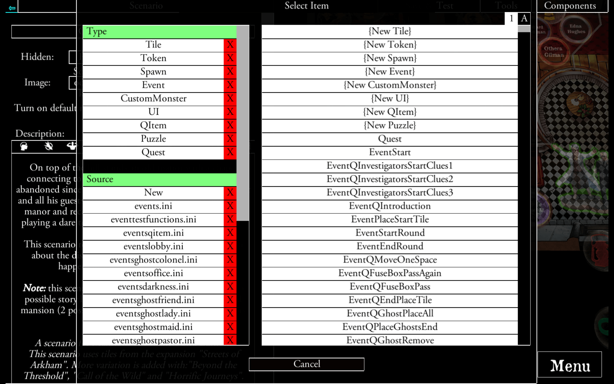
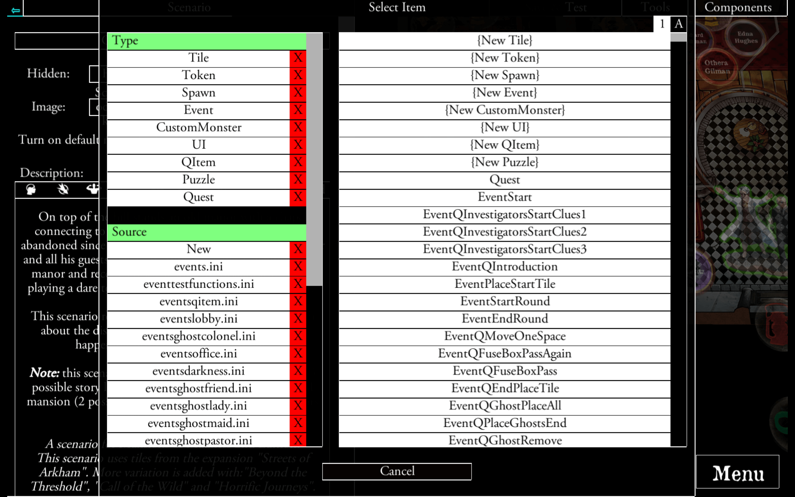

Sei der Spielleiter und verwirkliche deine persönlichen Ideen.
Verwende den Editor, um die aus den offiziellen Apps bekannten Marker und Spielplanteile zu platzieren.
 

Erstelle Ereignisse für deine Spielmarker, Figuren, Helden und mehr.
Nach der Veröffentlichung können andere Nutzer weltweit deine Geschichten erleben.


Teste deine Inhalte während der Erstellung und spiel sie nach Fertigstellung jederzeit.
Die Community kann Inhalte mit den Autoren gemeinsam lokalisieren. Szenarien und Quests können dann in verschiedenen Sprachen gespielt werden.
Spieler sind dazu eingeladen, das Szenario am Ende zu bewerten, um den Autor mit Feedback zu helfen.

Führe das Installationsprogramm aus und installiere Valkyrie am gewünschten Ort. Starte anschließend Valkyrie. Der Import kann einige Minuten dauern, sei bitte nicht ungeduldig. Falls der Import nicht abgeschlossen wird oder nicht funktioniert, lies den Abschnitt Troubleshooting.
Zur Benutzung von Valkyrie wird die Installation der entsprechenden FGG-Anwendung, die Sie spielen möchten, benötigt:
Wenn bereits eine andere Version von Valkyrie installiert ist, deinstalliere diese bitte zuerst.
1. Aktivieren Sie "Unbekannte Quellen" unter Einstellungen → Sicherheit → Unbekannte Quellen.2. Klicken Sie auf die Schaltfläche "Neuste Valkyrie Version herunterladen" unten, um die Valkyrie-.apk-Datei auf Ihr Gerät herunterzuladen oder von einem anderen Gerät zu kopieren.
3. Führen Sie die Valkyrie-.apk-Datei aus, um Valkyrie zu installieren. Nachdem die Installation abgeschlossen ist, finden Sie eine App namens "Valkyrie" in Ihrer App-Liste.
4. Starten Sie die App.
5. Erlauben Sie alle von der App angeforderten Berechtigungen.
6. Für alle weiteren Schritte, einschließlich des Datenimports aus den offiziellen Apps, lesen Sie bitte Android installation manual.
Neuste Valkyrie Version herunterladenDer Mac OS Gatekeeper muss deaktiviert sein:
Suche im Finder die Valkyrie App, um sie zu öffnen. Verwende dazu nicht Launchpad, da mit Launchpad nicht auf das Kontextmenü zugegriffen werden kann.
1. Drücke die Strg-Taste, klicke auf das Anwendungssymbol und wähle/klicke dann "Öffnen" aus dem Kontextmenü.
2. Die App wird als Ausnahme für die Sicherheitseinstellungen gespeichert. Daraufhin kann Valkyrie wie jede andere registrierte App durch einen Doppelklick geöffnet werden.
Falls der Import nicht abgeschlossen wird, versuche bitte Valkyrie mit erhöhten Privilegien auszuführen.
Stelle außerdem sicher, dass die Ordner-Berechtigungen vorhanden sind. Verschiebe den Valkyrie-Download in den Ordner "Programme" innerhalb der Finder-Anwendung. Führe anschließend chmod +x /Applications/Valkyrie.app/Inhalte/MacOS/Valkyrie in der Terminal-Anwendung aus.
Neueste Valkyrie Version herunterladenAuch für Linux gibt es keinen automatischen Import:
1. Kopiere content/<type>/ffg von einer anderen importierten Installation oder...
2. ...Führe -import <location> aus. Wobei <location> der Speicherort ist, an dem die "Descent: Wege zum Ruhm" oder "Villen des Wahnsinns" Dateien liegen.
Zum Beispiel /home/ <username< /.local/share/Steam/steamapps/common/Descent Road to Legend für "Descent: Wege zum Ruhm".
Neueste Valkyrie Version herunterladenWährend wir aufgrund von Apples erzwungenen App Store-Anforderungen keinen Client ausliefern, können Sie Valkyrie über Steam Link von Ihrem Computer auf iOS streamen.
Installieren Sie Valkyrie und Steam auf ihrem PC. Starten Sie die Steam-Anwendung auf Ihrem Computer und die Steam-Link-App auf Ihrem IOS-Gerät. Starten Sie anschließend Valkyrie auf Ihrem Computer, um sie zu streamen.